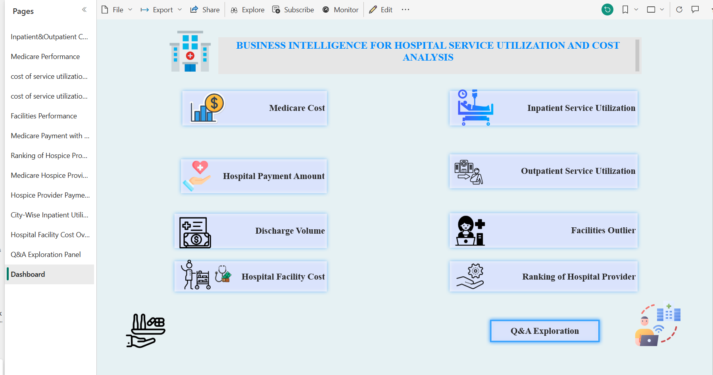
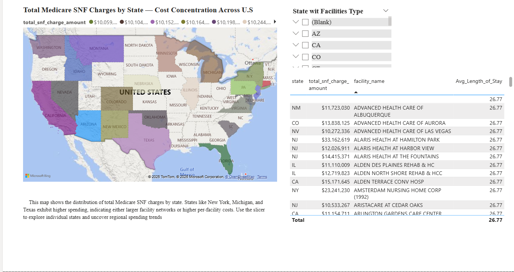

Built Power BI dashboards integrated with SQL to analyze healthcare costs and patient flow. Provided actionable insights on service utilization and resource allocation for hospital management.
 Data analysis in the healthcare sector is critical for improving patient outcomes, optimizing resource allocation, and supporting evidence-based policy development. The Centers for Medicare & Medicaid Services (CMS) provide comprehensive public datasets that offer valuable insights into healthcare service utilization, treatment costs, and provider performance across the United States. The analysis of the 2014 CMS Medicare dataset, which contains comprehensive data on nursing homes, prescription medication use, inpatient and outpatient treatments, and provider fees, is the main objective of this paper. This report also demonstrates essential BI skills such as data preparation, DAX calculation, Power Query transformations, and dashboard design, culminating in a scalable, data-driven approach to healthcare management. Using Power BI as the core business intelligence tool, this report aims to transform complex Medicare data into interactive visualizations that support informed decision-making for patient management, financial planning, and policy development.